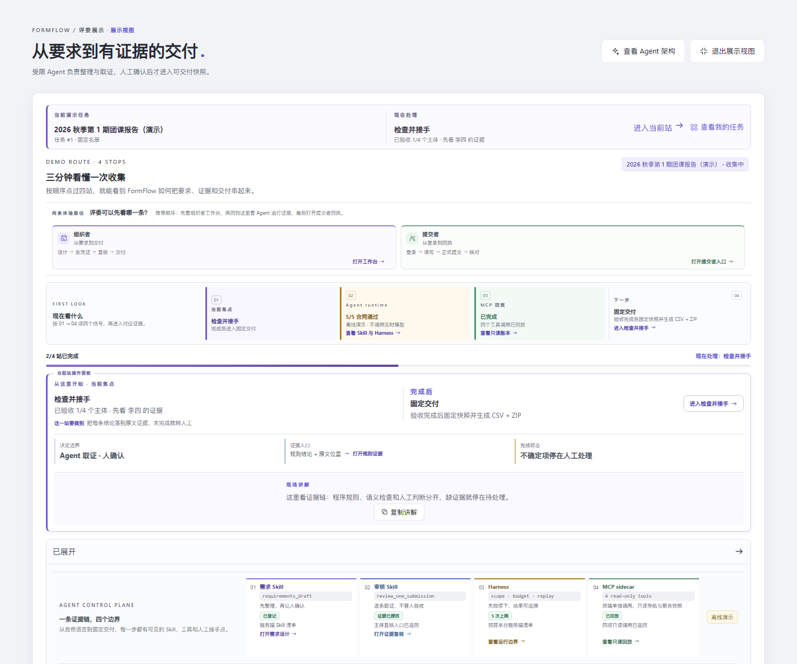
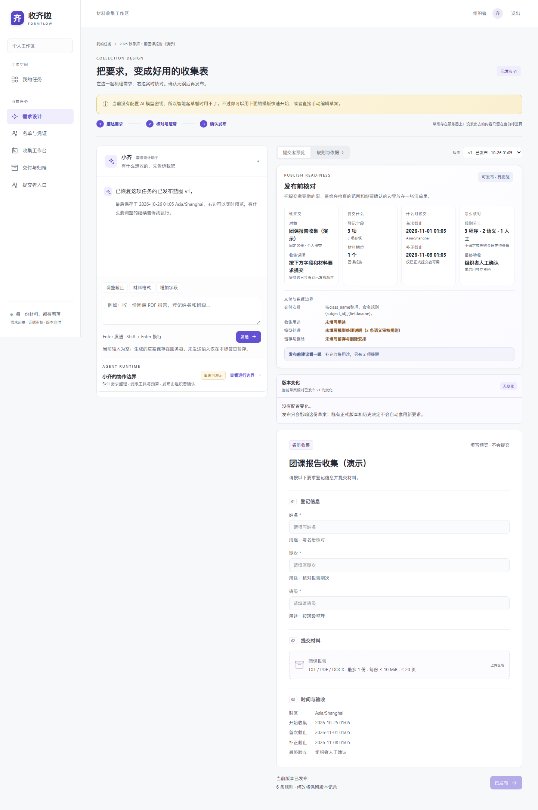
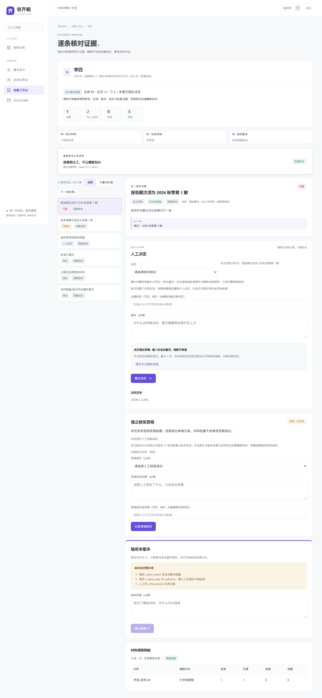
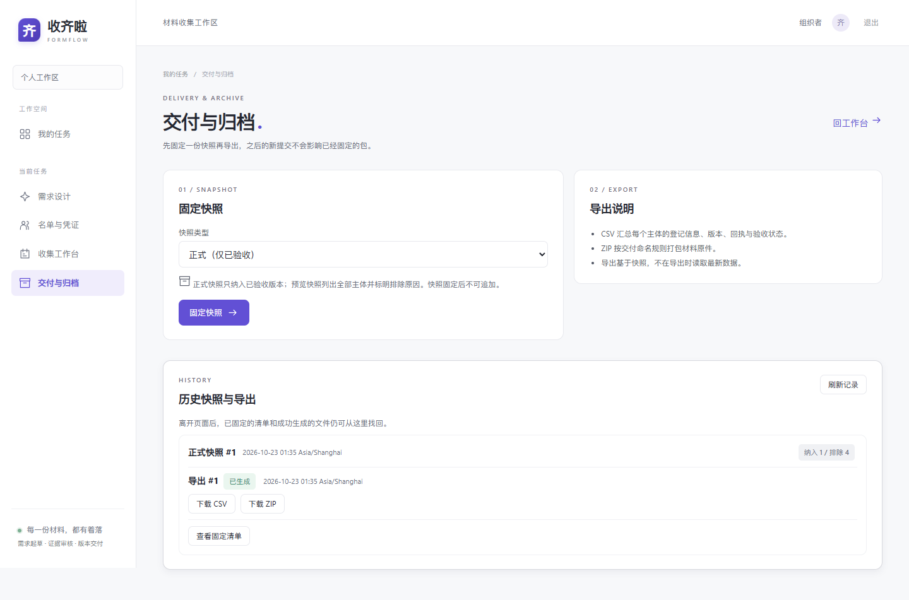

2个分工明确的 Agent
4段可追溯运行阶段
1条从要求到交付的证据链
Skill 固定方法，Harness 限制执行，MCP 提供只读状态，人保留发布与验收权。
ONE COLLECTION, FOUR STOPS
从“我要收什么”到“这份交付为什么可信”。
FormFlow 把容易散落在聊天记录、表格和附件里的工作，放进一条能被组织者检查、被提交者理解的路径。
CAPTIONED WALKTHROUGH / 42 SEC
用一段真实走查，看懂 Agent 如何把流程串起来。
录像使用虚构种子和离线审核回放，字幕、阶段提示和重点区域已经录入画面；它展示产品行为，不代表真实模型质量。
画面内置字幕，并提供可开关的中文字幕轨道；需要复现同一条路径时，请查看录制说明。
查看演示文字稿
- 需求整理：组织者上传通知、名单和模板，需求 Agent 把资料整理成字段、材料槽位与核验规则。
- 提交材料：提交者填写信息、上传多份材料，草稿和正式回执分开保存。
- 证据复核：审核 Agent 逐条比较表单和文件，输出满足、问题、待确认或未完成，并保留文件位置线索。
- 确认交付：组织者处理人工事项、验收当前版本，再固定快照并导出 CSV 与 ZIP。
AGENT CONTROL PLANE
AI 负责理解，人负责决定。
FormFlow 把模型放进明确的工具和责任边界里，让“能做什么”和“应该停在哪里”都能被展示。
01
Skill · 需求整理
分类资料、抽取要求、检查冲突、提出澄清、返回可编辑草案。
02
Harness · 执行护栏
任务范围、工具白名单、调用预算、幂等恢复、失败关闭。
03
MCP · 只读状态
提供任务列表、收集汇总和运行时合同，不读取材料正文，不写业务数据。
HUMAN GATE
不确定，就停在待确认。
模型给出的文件、页码和区域是定位线索。组织者可以打开原文核对，处理人工判断，最后确认发布、补正和验收。
✓ 规则来源可追溯✓ unknown 不伪装成通过✓ API Key 只留在部署者本地
PRODUCT EVIDENCE
不是概念图，是已经跑过的产品路径。
下面的画面来自虚构种子和真实浏览器走查，展示状态、证据、责任分工和交付结果。




READY TO TRY
先用虚构数据看懂，再接入自己的模型。
本地启动不需要 API Key；接入真实 provider 时，密钥由部署者保存在本地环境或 Secret 文件中。